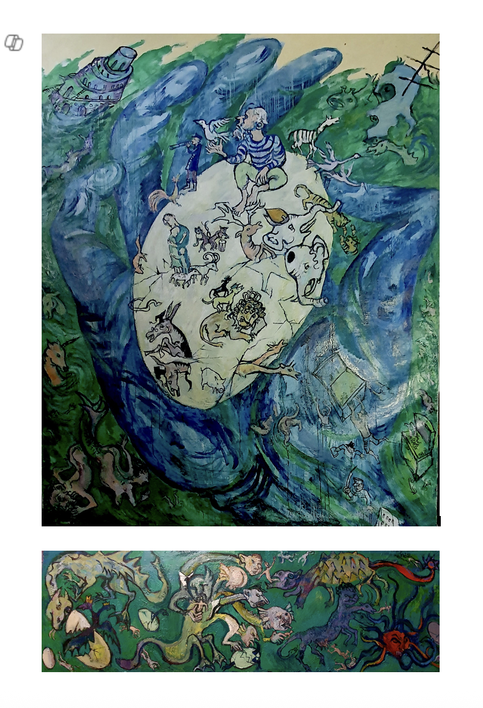
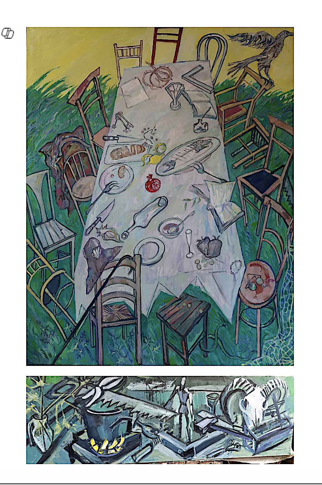
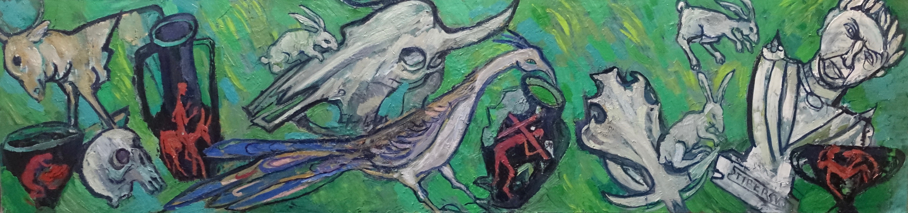
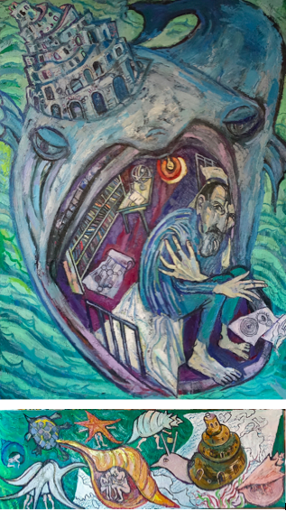
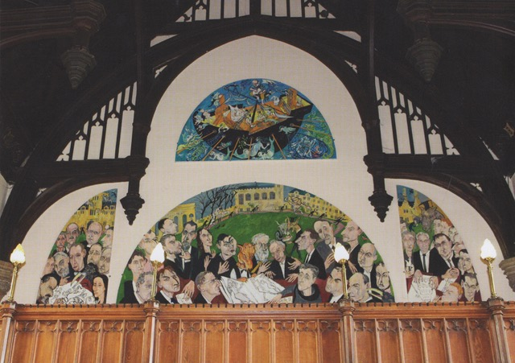

Pontifical Academy of Sciences
Vatican
Rome, Italy
Two major works are permanently installed at the Pontifical Academy of Sciences within the Vatican: a meditation on faith, philosophy, and sacred figuration.
- Saint Thomas Aquinas
- Saint Francis and Blessed Augustine
Église Saint-Merry
Paris
Paris, France · 2014–2017
A large-scale monumental work permanently installed in the historic Église Saint-Merry in the 4th arrondissement of Paris, one of the city's most significant medieval churches.


Chapel of Resurrection — LSRS
Luxembourg
Luxembourg City, Luxembourg · 2022
A site-specific cycle of paintings created for the Chapel of Resurrection at the Luxembourg School of Religion and Society. One of Kantor's most significant monumental commissions, accompanied by an international symposium in 2022.
- Flood with Predella
- Last Supper with Predella
- Predella of Marys





Federal Foreign Office — Genscher Saal
Berlin
Berlin, Germany · 2017
Two monumental paintings permanently installed in the Genscher Saal of the Federal Foreign Office of Germany — among the most prominent institutional commissions of Kantor's career.
- Storm, 290×350 cm
- Library, 290×350 cm


Hesburgh Libraries — University of Notre Dame
Indiana
Notre Dame, Indiana, USA · 2013–2015
A series of monumental portraits of philosophers permanently installed in the Hesburgh Libraries at the University of Notre Dame, Indiana. Each work depicts a major figure of Western intellectual tradition at a scale commensurate with the library's grand architecture.
- Plato
- Socrates
- Hegel
- Erasmus
- Schweitzer
- Chesterton


Pembroke College
Oxford
Oxford, United Kingdom · 2016–2019
A triptych altar and related works permanently installed at Pembroke College, University of Oxford, where Kantor holds an Honorary Fellowship. The commission represents one of his most sustained engagements with sacred imagery in a collegiate context.
- Adoration of the Magi (triptych, 2016)
- Wonderful Catch, 300×160 cm (2019)





Stained Glass Commission
Don Quixote
2024
A stained glass window depicting Don Quixote — Kantor's most recent monumental commission in the medium, bringing his painterly language into the tradition of sacred light and colour.